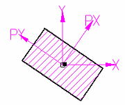
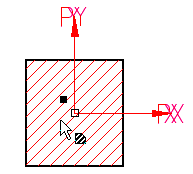
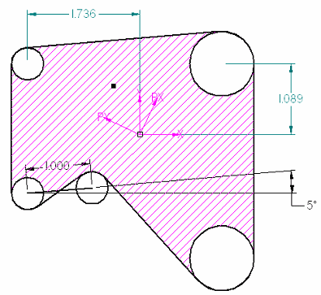
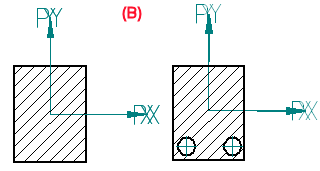

Using area in calculations
Area calculations and information
On the Inspect tab, both the Measure Area command and the Area command calculate the area inside one or more closed boundaries, but the Area command does much more.
If you select the Create Area option on the Area command bar before you compute the area, the filled area becomes an object that is associative to the boundary used to define it. The quantitative information is retained and can be reviewed on the Area Properties page of the Info dialog box. You can manipulate this area object and it will update the area and other calculations.
Use the Area command if you want to:
-
Calculate additional quantitative information about the region, such as perimeter and moments of inertia.
-
Display centroid (X,Y) and principal moments of inertia (PX,PY) coordinate systems for the area.

-
Use the handle point generated for the region included in the area object to select and drag the area fill into another closed boundary.

-
Select automatically generated area object properties for perimeter or area as the dependent variable whose value you want to calculate in goal seeking calculations.
-
Reuse the area object and its information in further calculations or in other processes. For example, you can dimension to the keypoint at the origin of the area coordinate system located at the centroid of the area object.

-
Calculate the discrete area of overlapping elements, and then add or remove geometry and recalculate, as illustrated by examples (A) and (B).

Modifying area display properties
To distinguish area objects from other 2D elements, you can set different display properties for them using options on the Area command bar and the Info dialog box.
- Coordinate system axes
-
Independent controls for the centroid coordinate system and the principal moments of inertia coordinate system are available on the Coordinate Systems page of the Info dialog box. You can turn the coordinate systems on and off and change the display colors and characteristics of the leaders and text.
Even when the coordinate system axes are turned off, you can still see and select the center-of-area keypoint located at the centroid of the area object. You can use this keypoint to connect other objects to it, such as dimensions.
The overall size of the coordinate system is controlled by the font size in the dimension style.
- Area fill color and pattern
-
Before creating an area object, you can select a fill style from the Fill Style list on the Area command bar.
You also can make independent changes to the line, color, and pattern used to fill an area object using the options on the Fill page of the Info dialog box.
After you have created an area object, you can select an area and modify its fill and coordinate system properties by selecting the Properties button on the Area command bar or by choosing Properties from the area object shortcut menu.
How do I
Calculate a target value by goal seekingCompute an area
Recompute a modified area object
Look up more details
Area commandArea command bar
Info dialog box